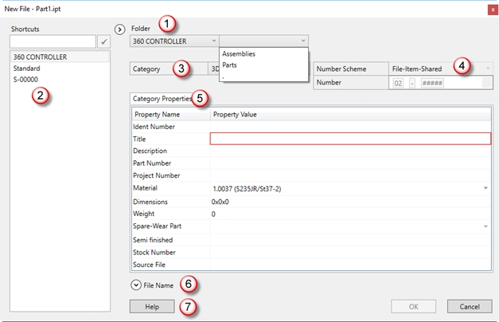
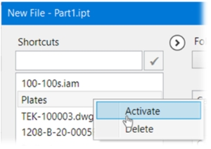
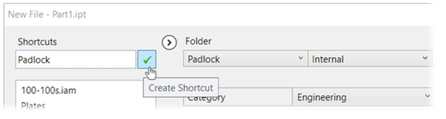
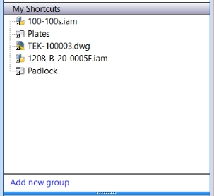
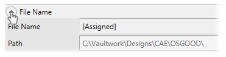
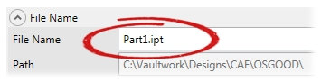

The first time you save new parts and assemblies
the Inventor dialog for the file category "3D components" will
appear.

1 Select the project / root
folder and optionally sub-folder(s). To go back one level up,
select the "." in the drop down list.
The selection lists will show existing projects /
folders and their subfolders. If you need a new directory, you can
create this in Vault Explorer. The directory list will be
automatically updated next time you select the folder in the
drop-down list in the dialog.
Note: The last used folder will be
remembered and the default selection the next time the dialog comes
up.
2 Use the My Shortcuts
panel to save and restore a shortcut to the project- and
subdirectories. Activate / delete a shortcut with the right mouse
button:

Note: Activating a Folder shortcut
will set the folder path. Activating a File Shortcut will activate
the path.
The current selection of project and
subdirectories can be saved as a new shortcut:

This shortcut will also be created in Vault
explorer:

Note: In the CAD dialog only shortcuts
within the CAD-workspace will be displayed.
3 The Category is
pre-selected:
- For the
Vault Quickstart configuration the category is set to "3D
Component".
- For
Other Vault Configurations the category is set to
"Engineering".
4 The number scheme is set
to the default scheme. (configured by the administrator in the
Vault options)
5 The category properties
are organized in a tabbed grid. This grid can be easily extended
with extra tabs: ERP/ITEM tab and Terms catalog tab.
6 Review the local storage
location and file name.

Note: If automatic file naming is disabled
(by the administrator), the File Name section will automatically
expand and you will be prompted to enter the file name:

7 Access the Help
Files